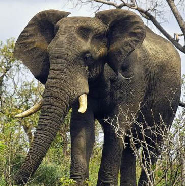
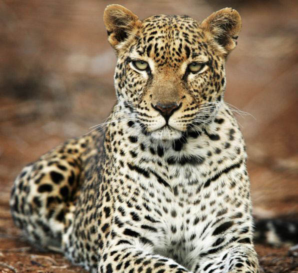
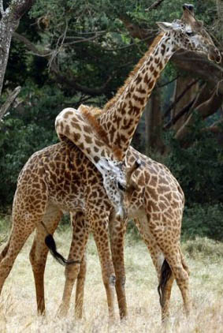
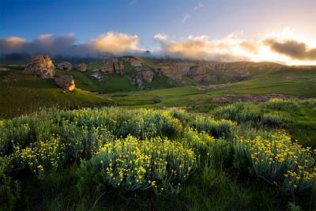
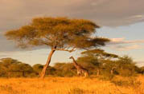

- 
- 
Тваринний світ АФРИКИ
Тваринний світ Африки різноманітний і багатий; ивчений ще не повністю. З хижих у саванах живуть ви, леопарди, гепарди, рись, гієни. Дуже багато термітів, поширена муха цеце. У ХІХ столітті і особливо на початку ХХ кількість багатьох великих тварин різко скоротилася, а деякі зникли зовсім внаслідок винищування європейцями. Лише в 50-х рр. почала розширюватися мережа заповідників (національних парків, резервацій , у яких тварини охороняються, а кількість їх регулюється. Найбільші заповідники: Національний парк Крюгера (ПАР), Киву (Демократична Республіка Конго, Руанда).
|  |
Рослинний світ АФРИКИ
У флорі Африки, вивченої далеко не повністю, понад 40 тисяч видів і 3700 родин (900 ендемічні) квіткових рослин. Північна частина Африки входить у Голарктичну флористичну область. Територія Африки на південь від Сахари належить Палеотропічній області, на південному заході Африки виділяється Капська флористична область. Флора Атласу і північного узбережжя Лівії і ПАР належить Середземноморській підобласті Голарктики і має багато спільного з флорою Південної Європи (суничне дерево, ладанник) і Західної Азії (атласький кедр, євфратська тополя).
|  | |
|  |